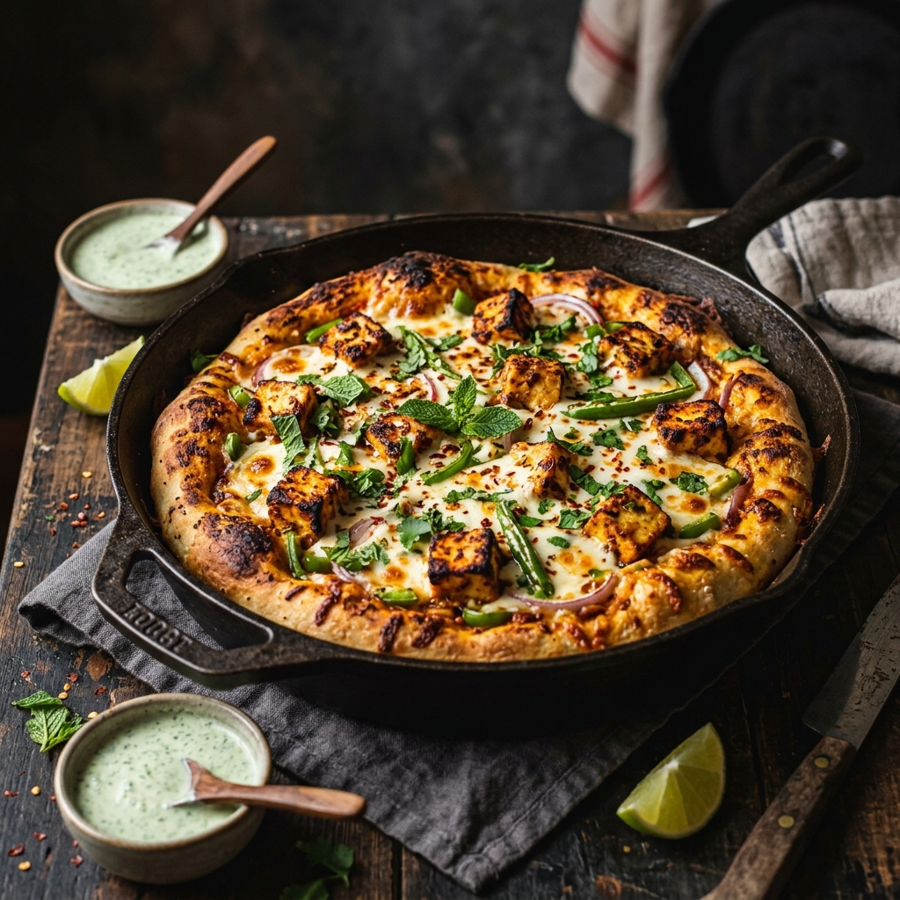

Smoky tandoori paneer tikka pizza baked to perfection in a skillet with a soft whole wheat crust.

Tip: Tap items to check them off as you prep!
Follow steps sequentially. Mark completed steps to keep track.
To begin making the Tandoori Paneer Tikka Skillet Pizza Recipe, we will first make the pizza dough as it takes a couple of hours to rise.In a large mixing bowl, combine the flour, yeast, salt, sugar.
Add lukewarm water and knead to make a soft smooth dough.
Add olive oil on the top and knead the pizza dough for about 5 minutes until the pizza dough is soft.Once done, cover the dough and keep it aside for about 2 hours until the dough has almost doubled in size.In the meanwhile we will prepare the paneer tikka masala topping for the pizza.In a bowl, combine the cream and chopped mint leaves.Pound the fennel seeds and ajwain and add it to the yogurt .
Add in the remaining tikka masala ingredients into the cream mixture and stir to combine well.Place the paneer cubes in a large bowl, add in the marinade and allow it to rest covered for about half an hour to one hour or even overnight to get maximum flavour.After the paneer is marinated we will cook the paneer.
Make a paste of the ginger and garlic using a pestle and mortar.Heat oil in a heavy bottomed pan; add the pounded ginger, garlic and saute for a few seconds.
Add the tomato puree, paneer along with the marinade and give it a good stir to combine all the ingredients.Check the salt and spices and adjust to suit your taste.
Cover the pan and allow the Paneer Tikka Masala to simmer for about 3 to 4 and turn off the heat.While simmering, we can prepare the coal for the coal smoking method.Take a piece or two of coal (about 3 inches big) and hold it over a gas flame with the help of tongs.
The coal will begin to turn red hot and also grey in about 5 minutes.This indicates that the coal can be used for smoking.
Place this hot coal inside a crack proof bowl.
At this point heat a large wok or a skillet with rim that can be covered on medium heat.Place the coal along with the bowl over the paneer tikka masala.Add a spoon of ghee or oil on the coal.
It will begin to smoke.
Immediately cover the pan and reduce the heat to low and let it sit for about a minute until the smoke has gone away.
Open the lid and remove the coal cup.Your dish will get a smoked flavored paneer that taste just like the Tandoori Paneer Tikka Masala for the pizza is ready.Finally, now we will make the pizza.When the dough has risen and the tikka masala is ready, make the pizza when you are ready to serve it - else the pizza will get brittle and the paneer will become stiff.Preheat a skillet or a iron tawa on medium heat.Divide the pizza dough into 4 portions.Dust the pizza dough on flour and roll to make a 5 inch circle or the thickness you like for the pizza crust.Place the rolled dough on the tawa and cook it like a roti on both sides.Spread a little oil on the top of the dough and flip to make it face the bottom.
Next spread the paneer tikka topping on the pizza and spread it evenly.
Finally drizzle the mozzarella cheese.Cover the pan and allow the cheese to melt and also wait for the crust to get a slightly crisp from the sides.
This will take about 4 to 5 minutes.Once done, remove the Tandoori Paneer Tikka Skillet Pizza from the skillet and serve.Proceed the same way with the remaining pizza dough and serve immediately.You can serve the Tandoori Paneer (Cottage Cheese) Tikka Skillet Pizza with Indian Style Masala Macaroni for weekend night dinner.